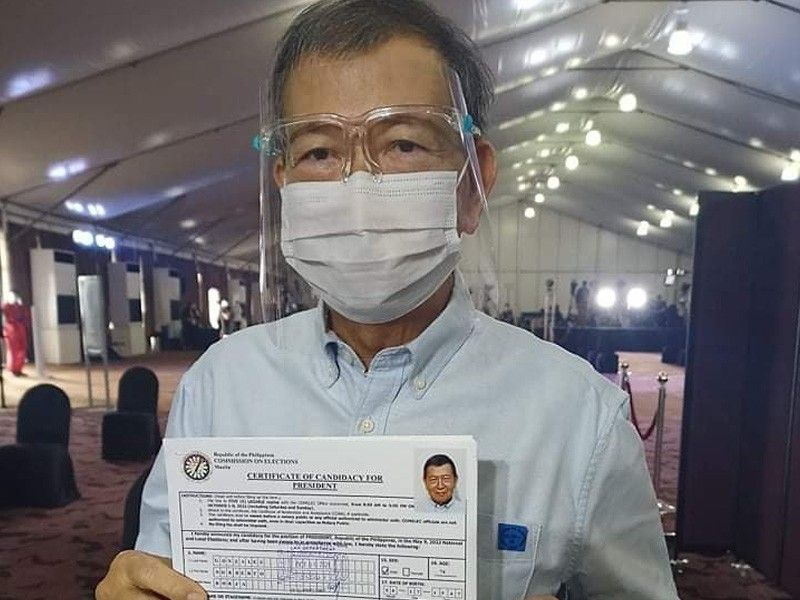
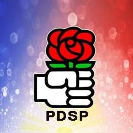

Norberto Gonzales
Norberto Borja Gonzales | Former Secretary of National Defense of Philippines
General Information
- Previous Secretary of National Defense
- Was the National Security Adviser under President Gloria Macapagal Arroyo
- Ran for president for the 2022 Elections under Partido Demokratiko Sosyalista ng Pilipinas (PDSP)
History
- Finished pre-medicine course in Ateneo de Davao
- Joined anti-governmental protests during the 2nd term of Ferdinand Marcos
- The movement became the Partido Demokratiko Sosyalista ng Pilipinas (PDSP)
- Appointed National Security Adviser on 2005, then the defense chief on 2007 for a month
- Detained for contempt of Congress in 2005
- Continued being the Secretary of National Defense on 2009-2010
- Ran for the 2022 Election to reform the Department of Agriculture; also because he deemed Duterte's Covid response weak
Gallery
 